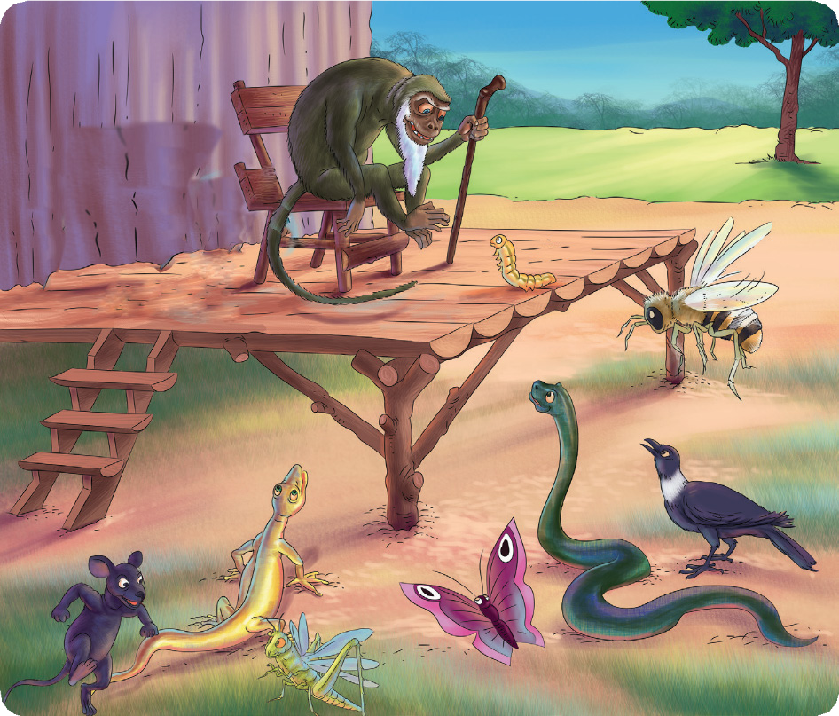

Soma hadithi ifuatayo, kisha jibu maswali yanayofuata.
Nzige, Panya na Kiwavi waliishi msituni pamoja na Kipepeo, Nyoka, Ndege, Mjusi na Mzee Ngedere. Nzige, Panya na Kiwavi walikuwa marafiki walioshirikiana kwa mambo mabaya. Mara nyingi, marafiki hawa walivamia mashamba ya Binadamu na kufanya uharibifu wa mazao. Walileta kero kubwa.
Binadamu alitumia mbinu nyingi ili kuwaangamiza viumbe hao lakini mbinu zake hazikufua dafu. Siku moja, Mzee Ngedere alikwenda kwa Binadamu kuomba kazi ya kuwaangamiza Nzige, Panya na Kiwavi.
Binadamu alicheka sana kwa kumdharau Mzee Ngedere. Mzee Ngedere akasema, “Usinicheke, ninaweza kuwakamata na hata kuwaangamiza viumbe wale waharibifu iwapo utaniamini.” Binadamu akamjibu, “Mimi nimehangaika miaka nenda miaka rudi sijaweza kuwakamata, wewe utawezaje na uzee wako?”
“Mbona unakata tamaa, hujui kuwa uzee ni dawa? Mimi ninawajua viumbe hao; hupenda sana mafumbo. Nitawakamata kirahisi sana kwa mtego wa vitendawili,” Mzee Ngedere alieleza.
“Utahitaji malipo gani?” Binadamu aliuliza. Mzee Ngedere akamjibu kuwa atajilipa kwa kuchukua mazao anayoyataka shambani kwa binadamu. Binadamu alimruhusu Mzee Ngedere. Mzee Ngedere akaandaa tangazo kuwa kutakuwa na shindano la kutegua vitendawili. Aliahidi zawadi ya shamba na ghala la chakula kizuri kwa atakayetegua kitendawili chake kwa usahihi.
Nzige, Panya na Kiwavi walilipata tangazo hilo wakiwa wamejibanza mafichoni. Nzige akawauliza wenzake, “Rafiki zangu, hivi mnaujua utamu wa vitendawili?” Kiwavi akajibu, “Mimi ninaujua. Vitendawili ni vitamu kuliko hata chakula. Twendeni nikawaoneshe uhodari wangu wa kutegua vitendawili.”
Panya naye hakuwa nyuma. Akasema, “Hilo shamba na ghala lazima nivipate mimi. Nitafaidi utamu wa vitendawili na nitajipatia ghala la vyakula vizuri. Lazima nife kishujaa kupata ushindi huu.”
“Hebu tusiandikie mate na wino ungalipo. Twendeni tukashindane.” Kiwavi aliwahimiza wenzake. Wote wakachapa mguu kuelekea kwenye jukwaa la kufanyia shindano. Wanyama na wadudu wengine walipowaona Panya na wenzake wakiingia ukumbini kwa maringo, waliwashangilia kwa nguvu. Nzige, Panya na Kiwavi wakajipanga nyuma na kuwa wa mwishomwisho ili vitendawili vigumu zaidi viishe.
FOR ONLINE READING ONLY

Kipepeo, Nyoka, Nyuki, Ndege na Mjusi ndio waliotangulia. Wote wakashindwa kutegua vitendawili vya Mzee Ngedere. Nzige, Panya na Kiwavi hawakuacha nyuma maringo yao ikiwa ni moja ya silaha ya ushindi wao. Hatimaye, ikawadia zamu ya Kiwavi. Alijinyonganyonga kwa madaha akapanda jukwaani na kusubiri kitendawili.
“Kitendawili!” Mzee Ngedere alisema. Kiwavi akajibu, “Tega.”
“Nikikutana na adui yangu nanyong’onyea. Nipatie jibu na maana yake.” Mzee Ngedere alitega na kuomba jibu. Kiwavi alichemsha bongo akajibu haraka bila kupoteza muda, “Jibu lake ugonjwa. Maana yake ni kuwa ugonjwa umefananishwa na adui; ugonjwa ni adui mkubwa wa viumbe. Binadamu akikutana na ugonjwa, anakuwa mnyonge. Hata sisi viumbe wengine vivyo hivyo.” Mzee Ngedere akamwambia, “Umepata!”
Panya alisogea akarukaruka kwa mikogo jukwaani. Mzee Ngedere akamtegea kitendawili chake, “Adui tumemzingira lakini hatumuwezi.” Panya akajibu, “Jibu lake ni moto. Maana yake ni kuwa hata tukiwa wengi kiasi gani hatuwezi kukabiliana na joto la moto tunaouota. Moto umefananishwa na adui ambaye watu wamemzunguka kana kwamba wanamshambulia.” Mzee Ngedere akamwambia, “Umepata.”
Baada ya Panya kutegua kitendawili, Nzige akawa wa mwisho kutegua kitendawili chake. Mzee Ngedere akatega akisema, “Ukumbuu wa babu mrefu.” Nzige aliyainuainua mabawa yake kwa mbwembwe na kutoa sauti ya nti nti nti! Kisha
akajibu, “Njia! Maana yake ni kwamba njia ni ndefu kama ukumbuu. Kitendawili hiki kinafananisha urefu wa njia na mshipi.”
Mzee Ngedere aliwapongeza marafiki hao watatu kwa kutegua vitendawili na kuvipatia maana zake kwa usahihi. Akawaomba waende kwenye chumba cha mapumziko ili wasubiri hatua ya pili. Waliingia kwenye chumba mlimokuwa na chakula kizuri kilichoandaliwa na Mzee Ngedere. Wakaanza kula. Siku za mwizi ni arobaini, na ujanja mwingi mbele kiza. Walipogutuka wakajikuta wamekwishafungiwa humo, huku nje binadamu akiwatazama kwa dhihaka. Wakadhani ni kiinimacho. Kumbe Mzee Ngedere alikuwa amekula njama kuwakamata kwa hila na hilo lilikuwa gereza la waharibifu wa mazao.
Binadamu alimshukuru Mzee Ngedere kwa msaada wake akisema, “Ama kweli umdhaniaye ndiye kumbe siye! Mzee Ngedere naye alimshukuru Binadamu kwa kumpatia nafasi, kisha akarejea mlimani. Kama malipo ya kazi hiyo, Mzee Ngedere wakati mwingine huenda kwenye mashamba ya binadamu na kula mazao.